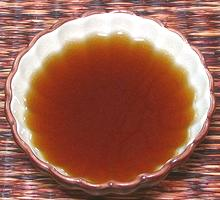
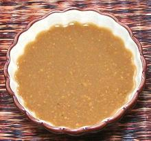

Fish sauce is absolutely essential for Southeast Asia cuisines, including Thai, Vietnamese, Cambodian, Indonesian, and Philippine. This has been a serious problem for vegetarians. The usual advice, "Use light soy sauce" or "Use plain salt", is not at all satisfactory. Commercial vegetarian fish sauces are difficult to find, and I can report first hand they are as vile and disgusting as others have claimed. They are from Vietnam, which has a strict Chinese style Buddhism, while Thai Buddhism is happy with "don't ask, don't tell". This is the policy I recommend, but it will not be acceptable to some strict vegetarians. Do-it-yourself formulas I've read seem over complicated and I'm not confident of the results, so here I present the very simple and effective recipes I've composed. Both clear and murky fish sauces are used in Southeast Asia, and I present a recipe for each.
 |
Vegetarian Fish Sauce - ClearCalifornia - Mam Nem Chay | ||||
| Makes: Effort: Sched: DoAhead: |
1-1/2 cups ** 30 min Yes |
While many recipes require a clear fish sauce, I have found very little on vegetarian versions. This one fills the bill pretty well. Of course, it can't taste "just like real fish sauce" without fish, but you knew there would be sacrifices before you chose vegetarianism. | |||
|
|
1/4 3 2 1/4 1 1/3 |
oz lrg c c t t |
Wakame, dried (1) Shiitakes, dried (2) Water Soy Sauce, thin Rice Vinegar Sugar |
|
 |
Vegetarian Fish Sauce - MurkyCalifornia - Mam Nem Chay | ||||
| Makes: Effort: Sched: DoAhead: |
1 cup ** 45 min Best |
This is the "fish sauce" to use if you don't actually need a clear sauce. While little known in North America, the murky fish sauces are much used in Southeast Asia, especially in Issan (northeast Thailand), Laos, and the Philippines. In these regions it is used more than the clear. | |||
|
|
1/2 3 4 1/3 1/2 1/2 |
oz lrg c t c T |
Wakame, dried (1) Shiitakes, dried (2) Water Salt Yellow Bean Sauce (3) Rice Vinegar |
|